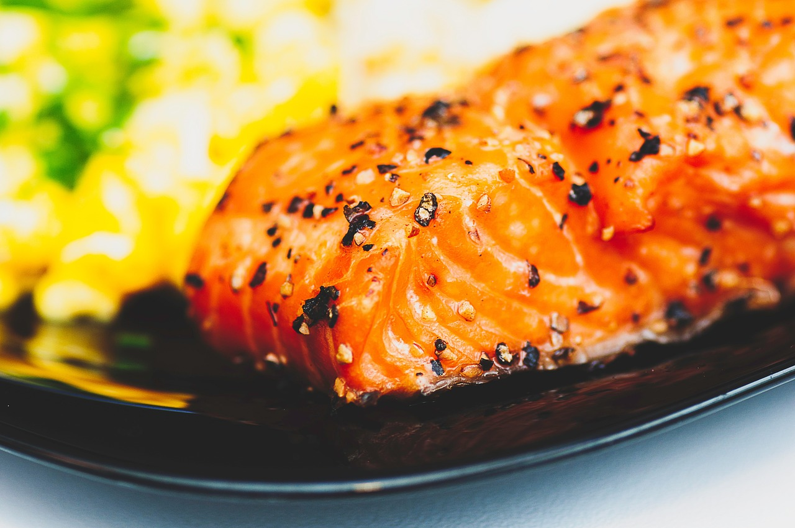

Gegrilltes Lachssteak mit Mangosalsa und Quinoa
Zubereitung
Die Mangosalsa vorbereiten, indem Sie reife Mangos schälen und würfeln. Fein gehackte rote Zwiebel, rote Paprika und Gurke hinzufügen. Frischen Koriander grob hacken. Alle Zutaten in einer Schüssel vermengen. Den Saft von 2 Limetten, 3 Esslöffel Olivenöl sowie Salz und Pfeffer hinzufügen und gut umrühren. In einem Topf 250 g Quinoa in 500 ml Gemüsebrühe kochen, bis die Flüssigkeit absorbiert ist. Lachssteaks mit Salz und Pfeffer würzen. In einer Grillpfanne oder auf dem Grill von beiden Seiten 4-5 Minuten grillen, bis sie rosa und zart sind. Gegrillte Lachssteaks mit Quinoa und der frischen Mangosalsa servieren.
Rezept erstellt von
Meran Osman